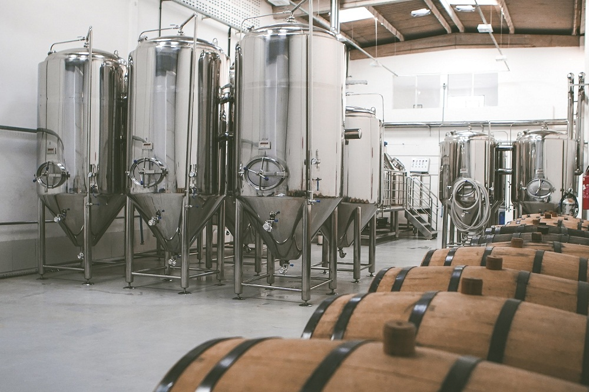
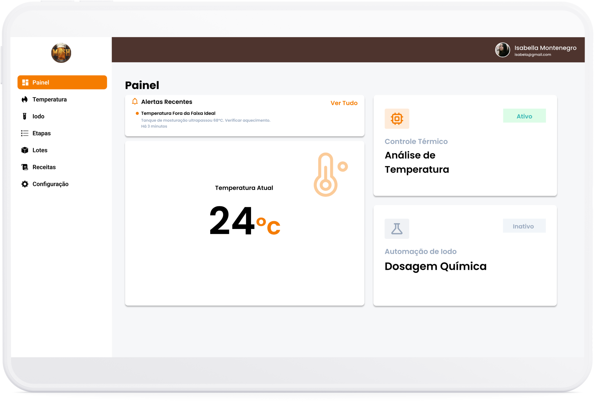
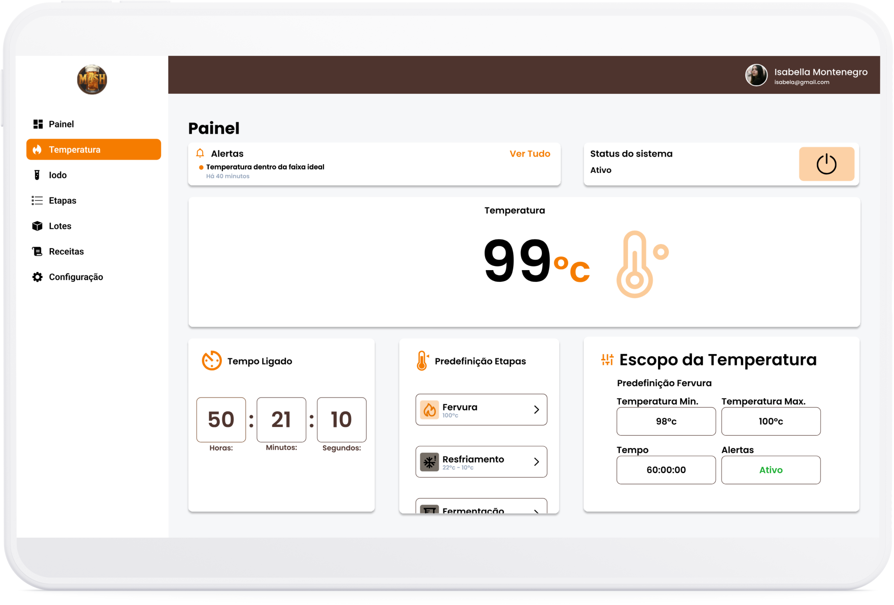

A conloq é uma empresa especializada no desenvolvimento de soluções multiplataforma de alta performance, desenhadas especificamente para o ecossistema das cervejarias artesanais.
Com nosso software multiplataforma, você monitora sua produção em tempo real, onde quer que esteja.
Sobre a Conloq
Propósitos
1Aprimorar processos de interação |
|
2Oferecer ferramentas inteligentes que facilitam a tomada de decisões |
3Automatizar processos na cervejaria artesanal |
Equipe

Cerveja Artesanal
A Produção de Cerveja Artesanal e o Teste de Iodo
A produção de uma cerveja artesanal de alta qualidade depende de uma transformação química precisa durante a etapa de mosturação. É neste momento que as enzimas convertem os amidos dos grãos em açúcares fermentáveis.
-
Garantia de Conversão Total
O teste atua como um indicador de fim de etapa, validando se todos os amidos foram transformados em açúcares.
-
Eficiência e Rendimento
Monitorar a degradação do amido evita o desperdício de insumos, garantindo o máximo potencial extraível do malte.
-
Qualidade e Estabilidade
A automação deste teste elimina o erro humano e evita a turbidez indesejada na cerveja final.

Mash
Este projeto utiliza técnicas de visão computacional para a identificação e interpretação cromática do teste do iodo. Além de automatizar a análise laboratorial, o sistema realiza o monitoramento contínuo da temperatura em todas as etapas do processo, garantindo maior precisão e repetibilidade aos resultados.

